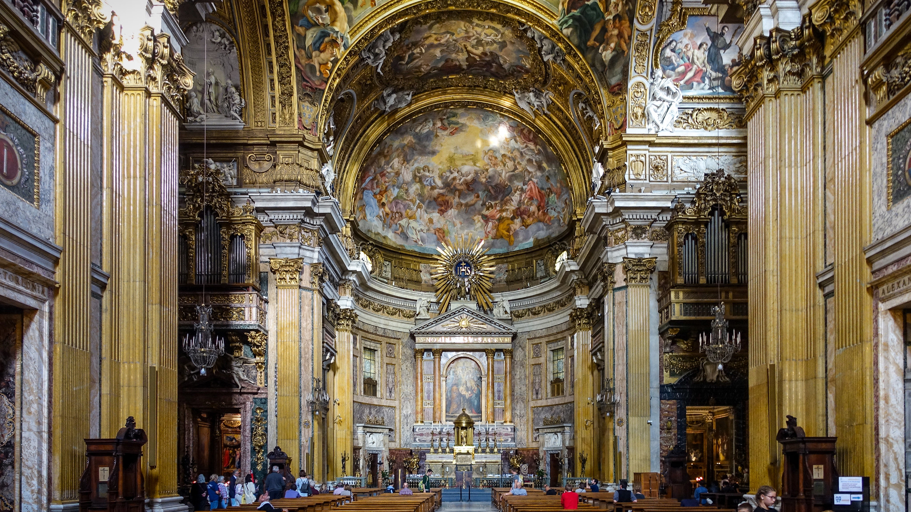

Oratorios y cantatas
En la música religiosa, el periodo barroco aporta nuevos géneros, entre los que cabe destacar el oratorio y la cantata. Estos géneros eran utilizados por las diferentes Iglesias (católica, luterana) como vehículo para transmitir sus doctrinas.
Los oratorios se elaboraban poniendo música a historias de carácter religioso, normalmente basadas en textos de la Biblia, tanto del Antiguo como del Nuevo Testamento. En los oratorios, a diferencia de la ópera, no hay representación escénica, sino que simplemente son interpretados por una orquesta, con coros y cantantes solistas, que narran la historia en un escenario y sin ningún tipo de decorado o acción.
La cantata es una forma musical escrita para ser cantada (a diferencia de la sonata, que es para ser tocada). Se trata de una obra vocal que mezcla canto solista, coros y acompañamiento de instrumentos. Es como una mini ópera en miniatura, pero con dos diferencias clave: no tiene actuación teatral al igual que el oratorio (no hay decorados, disfraces ni puesta en escena) pero es mucho más corta.

ESCUCHAMOS PERO NO JUZGAMOS: ORATORIOS Y CANTATAS
🎧 Audición 1
Escucha atentamente el siguiente fragmento musical Handel - ¡Aleluya!. En él, varios cantantes solistas y un gran coro, acompañados por la orquesta, narran una historia de carácter religioso extraída de la Biblia. Teniendo esto en cuenta y fijándote en la estructura, responde a las siguientes cuestiones:
Haendel - El Mesías - HWV 56 Parte II: Coro - Hallelujah
- ¿A qué forma musical barroca pertenece esta audición?
- Si estuviéramos viendo esta obra en directo en un teatro, ¿qué diferencias notarías a simple vista en el escenario en comparación con una representación de ópera?
🎧 Audición 2
Vas a escuchar una obra vocal completa: Bach - Jesús alegría de los hombres de Bach. Aunque comparte la ausencia de representación teatral (sin disfraces ni decorados) con otras formas musicales, se caracteriza por ser una composición de corta duración, como una "ópera en miniatura".
Bach - Cantata BWV 147 - Jesús alegría de los hombres
a) Identifica el tipo de forma musical que acabas de escuchar.
b) Explica brevemente la diferencia principal entre el término que da nombre a esta obra (cantata) y el término sonata.